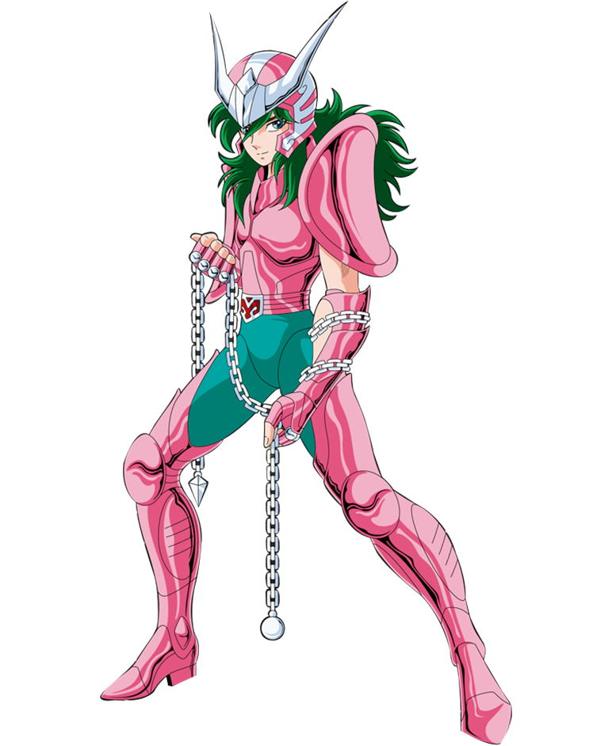

WEB

Web is a computer programming system created by Donald E. Knuth as the first implementation of what he called "literate programming": the idea that one could create software as works of literature, by embedding source code inside descriptive text, rather than the reverse (as is common practice in most programming languages), in an order that is convenient for exposition to human readers, rather than in the order demanded by the compiler.